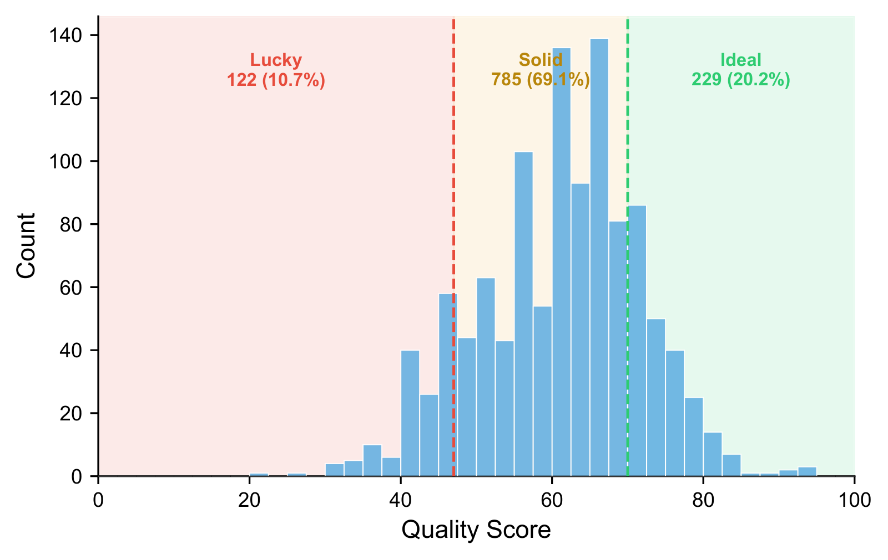
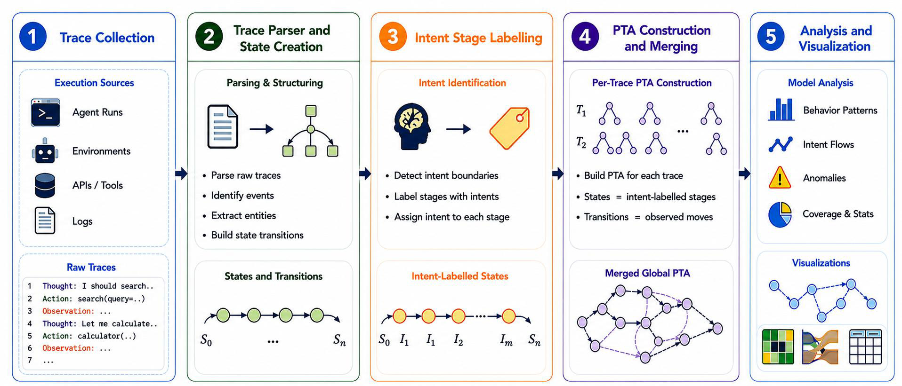
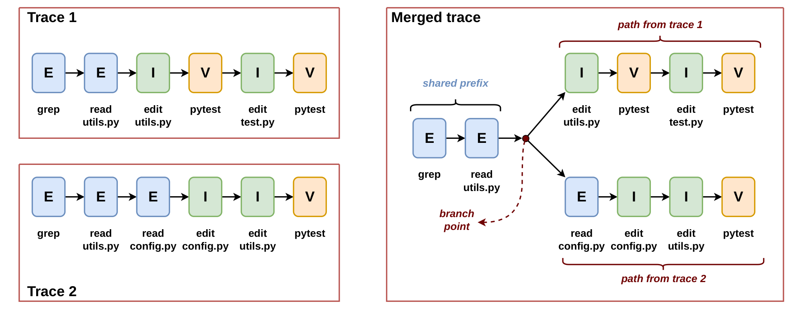

AgentLensRevealing The Lucky Pass Problem in SWE-Agent Evaluation
1University of Illinois Urbana-Champaign 2Microsoft
*Work done as a student researcher while at Microsoft. †Co-second authors.

Abstract
Evaluation of software engineering (SWE) agents is dominated by a binary signal: whether the final patch passes the tests. This outcome-only view treats a principled solution and a chaotic trial-and-error process as equivalent. We show that this equivalence is empirically false.
We evaluate 2,614 OpenHands trajectories from eight model backends on SWE-bench Verified. Of the 60 tasks in this corpus, 47 have enough passing trajectories to construct task-level process references, yielding a 1,815-trajectory evaluation subset. Among passing trajectories in this subset, 10.7% exhibit behavior we call a Lucky Pass: regression cycles, blind retries, missing verification, or temporally disordered exploration, implementation, and verification.
We introduce AgentLens, a framework for process-level assessment of SWE-agent trajectories, and define AgentLens-Bench, a dataset of 1,815 trajectories annotated with quality scores, waste signals, divergence points, and 47 task-level Prefix Tree Acceptor (PTA) references. AgentLens combines two components. First, it merges multiple passing solutions for the same task into a PTA reference space of correct behaviors. Second, it uses a context-sensitive intent-stage labeler that assigns actions to Exploration, Implementation, Verification, or Orchestration using trajectory history rather than tool identity alone.
On AgentLens-Bench, the composite score separates passing trajectories into Lucky, Solid, and Ideal tiers; decomposes Lucky Passes into five recurring mechanisms; and changes how the eight evaluated model backends are ranked compared with pass rate alone. Across these models, AgentLens classifies between 0.5% and 23.2% of successful trajectories as Lucky, and some models move by as many as five rank positions when ranked by quality score instead of pass rate.
How AgentLens works
AgentLens evaluates a candidate trajectory in four stages: it parses raw logs into labeled states, constructs a task-specific reference graph from passing solutions, scores the candidate against that reference, and returns a structured quality report.
Each action is assigned to one of four cognitive phases: Exploration Implementation Verification Orchestration, using trajectory history rather than tool identity alone. This resolves common ambiguities such as terminal commands: grep remains exploratory even after an edit, whereas pytest is verification.

A single reference trajectory cannot represent the diversity of correct strategies: two agents may solve the same task through different but valid sequences. AgentLens instead constructs a Prefix Tree Acceptor from multiple passing trajectories for the same task. Shared prefixes are merged into common nodes, while divergent but successful strategies form branches. Each root-to-terminal path therefore represents one known-good solution.

A candidate is scored against the task PTA with four signals: structural alignment, set coverage, trajectory coherence, and temporal profile similarity. They combine into a 0–100 quality score. Passing trajectories scoring 70 or more are Ideal, 47 to 70 are Solid, and below 47 are Lucky.
Results
Lucky Passes reveal recurring weak-success mechanisms
The 122 Lucky Passes produce correct patches but receive low process-quality scores. The two largest categories are Brute-Force Convergence, where the agent reaches a correct patch through repeated low-coherence attempts, and Incomplete Implementation, where the agent makes a partial fix that passes because visible tests are insufficient. Lucky trajectories with blind retries waste 11.4 steps per instance, compared with 2.7 in Ideal trajectories.
| Category | n | % | Key signal | Primary cause |
|---|---|---|---|---|
| C1: Minimal & Unverified | 19 | 15.6 | Short + no V stage | Agent overconfidence |
| C2: Brute-Force Convergence | 42 | 34.4 | High waste, low coh. | Lack of planning |
| C3: Incomplete Implementation | 41 | 33.6 | Partial fix, low cov. | Test-suite gaps |
| C4: Excessive Exploration | 5 | 4.1 | Very long, unfocused | Missing termination |
| C5: Divergent-but-Valid | 15 | 12.3 | Alternative approach | Multiple valid solutions |
Process quality changes how models are ranked
Quality-score rankings disagree with pass-rate rankings for every model. GPT-4o rises from 8th by pass rate to 3rd by quality score among the tasks it solves. Opus 4.6 shows the opposite pattern: a 77.3% pass rate hides an 18.7% Lucky rate.
| Model | Pass % | PR rank | Quality | QS rank | Lucky % |
|---|---|---|---|---|---|
| sonnet-4.5 | 86.8 | 2 | 67.4 | 1 | 1.0 |
| opus-4.5 | 87.9 | 1 | 66.2 | 2 | 0.5 |
| gpt-4o | 34.9 | 8 | 63.4 | 3 | 4.1 |
| gemini-2.5-pro | 42.9 | 7 | 59.2 | 4 | 7.6 |
| gpt-5.3-codex | 45.9 | 6 | 58.3 | 5 | 15.3 |
| opus-4.6 | 77.3 | 3 | 56.7 | 6 | 18.7 |
| gpt-5.2-codex | 64.6 | 4 | 56.1 | 7 | 19.4 |
| gpt-4.1 | 59.9 | 5 | 54.7 | 8 | 23.2 |
AgentLens-Bench
AgentLens-Bench is a process-annotated SWE-agent trajectory dataset built from 47 PTA-eligible SWE-bench Verified tasks. Each trajectory has a 40-column feature vector with quality scores, waste annotations, divergence metadata, and a tier label, and each task has one ground-truth PTA. Because each PTA represents the known-good solution space for a distinct task, the collection provides task-diverse references for trajectory scoring, filtering, and failure analysis.
- 1,815trajectories
- 47tasks, one PTA each
- 8model backends
- 1,136 / 679pass / fail
See the leaderboard · Browse the dataset on GitHub (CC-BY-4.0)
BibTeX
@inproceedings{sahoo2026agentlens,
title = {AgentLens: Revealing The Lucky Pass Problem in SWE-Agent Evaluation},
author = {Sahoo, Priyam and Mittal, Gaurav and Li, Xiaomin and Ma, Shengjie and Steenhoek, Benjamin and Lin, Pingping and Hu, Yu},
booktitle = {Advances in Neural Information Processing Systems (NeurIPS)},
year = {2026},
url = {https://arxiv.org/abs/2605.12925}
}